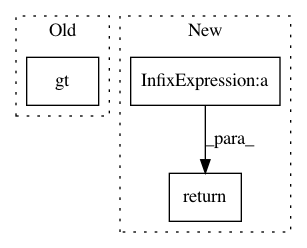

74cbc5f9153113a4a08a389e7d604f55a2647b1b,snntoolbox/core/inisim.py,,get_new_thresh,#Any#,221
Before Change
return theano.ifelse.ifelse(
t.eq(self.time / settings["dt"] % settings["timestep_fraction"], 0) *
t.gt(self.max_spikerate, settings["diff_to_min_rate"] / 1000) *
t.gt(1 / settings["dt"] - self.max_spikerate,
settings["diff_to_max_rate"] / 1000),
self.max_spikerate, self.v_thresh)
After Change
thr_min = 0.5
thr_max = 1.0
r_lim = 1 / settings["dt"]
return thr_min + (thr_max - thr_min) * self.max_spikerate / r_lim
// return theano.ifelse.ifelse(
// t.eq(self.time / settings["dt"] % settings["timestep_fraction"], 0) *
// t.gt(self.max_spikerate, settings["diff_to_min_rate"] / 1000) *
In pattern: SUPERPATTERN
Frequency: 3
Non-data size: 3
Instances
Project Name: NeuromorphicProcessorProject/snn_toolbox
Commit Name: 74cbc5f9153113a4a08a389e7d604f55a2647b1b
Time: 2017-04-21
Author: bodo.rueckauer@gmail.com
File Name: snntoolbox/core/inisim.py
Class Name:
Method Name: get_new_thresh
Project Name: rodluger/starry
Commit Name: e99414f3ea4021ce2816b44b7db75f42bbb34b41
Time: 2019-06-01
Author: rodluger@gmail.com
File Name: starry/ops/ops.py
Class Name: OpsReflected
Method Name: X
Project Name: jadore801120/attention-is-all-you-need-pytorch
Commit Name: 44402746c2bc970ce1d813e70494f48a98bf54b3
Time: 2018-08-23
Author: yhhuang@nlg.csie.ntu.edu.tw
File Name: transformer/Models.py
Class Name: Decoder
Method Name: forward